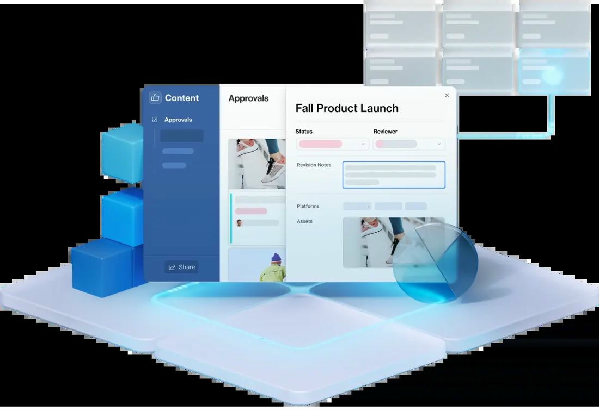

Airtable Review: A Database Wearing a Project Tool's Coat
6.4 Sensible Score, out of 10
Ratings by business type
Best suited to: operations teams, content and marketing operations, inventory and catalogue driven businesses, and anyone whose projects are really structured data in a trench coat.

Sensible Stack: Streamlining business, whatever your size
Review status: USED IT, for project tracking and data heavy lists.
The short answer
Airtable is a relational database that looks like a spreadsheet, and judged as that, it is excellent. Judged as a project management tool, it lands where Wrike lands for our reviewer: solid, team shaped, and missing the progress mechanics a project manager reaches for first. There is no task hierarchy at all, so progress is something you build from fields. The surprise, if you last looked at the free plan, is the Gantt: on paid tiers it is genuinely capable, with cascading dependencies and a critical path. You will pay $20 a seat before you are allowed to see it.
What it is
Work in Airtable lives in bases: tables of records with rich field types, linked to each other, viewed as grids, kanban boards, calendars, galleries and, on paid plans, timelines and Gantt charts. People build CRMs, content calendars, inventories and project trackers in it, because the underlying model is data first and the views are interchangeable.
Where it wins
- The data model. Linked records, lookups and rollups let a small team model how its work actually fits together, instead of flattening everything into a task list
- Views over one truth. The same records as a board for the team, a calendar for planning and a grid for the person who thinks in spreadsheets, with no duplicate data
- The paid Gantt is better than its reputation: dependencies that cascade when you drag records, critical path highlighting, and on Business all four dependency types with lead and lag. That beats Notion outright and gives Asana a run
- Interfaces. The Interface Designer turns a base into clean, client presentable pages, which makes Airtable quietly good at showing outsiders a tidy picture of messy data
- It is a Finta destination, like Notion: live bank balances and transactions can sync into a base, so a budget tracker can watch the real money
Where it frustrates
- Task progress is not a thing. Airtable has no subtasks and no hierarchy of work; a record is a record. Progress exists only as a percent field you maintain or a formula you write. For a reviewer whose recurring complaint across this whole series is progress tracking, Airtable is the purest case: the concept is absent, not broken
- The free plan walls off the project views. No Gantt, no timeline, 1,000 records per base. If you evaluated Airtable on free and concluded the Gantt was not up to much, you were probably looking at a plan that does not include it
- Per seat pricing with collaborator traps. Anyone who edits is billable, and at $20 a seat on Team and $45 on Business, a casual team gets expensive quickly. Record limits then bill you again for growing
- Bulk changes break the cascade. Dates changed by automations, the API or pasting into many records leave dependencies stale until someone runs the fix. The Gantt is capable, but it likes to be fed by hand
- No baselines, and no resource management worth the name. It is a database, not a scheduling engine, and it does not pretend otherwise once you read the small print
The AI, and its price tag
Airtable bundles AI as monthly credits inside its paid plans, spent on AI fields, summaries and its Omni app building assistant; add on credit packs cover heavy use. The useful framing: Airtable's AI works on your structured data, categorising, summarising and drafting record by record, which is a different job from a chatbot subscription. Our duplication warning still applies to the generic writing tricks, less so to the data chores. Packaging checked November 2026 and moving quickly.
Reporting and dashboards
Interfaces are the reporting story: build a dashboard page over your base, share it with a client, and it looks like a product, not a spreadsheet. Charts and summaries are solid for operational reporting. What you will not get is cross project programme reporting; each base is its own island unless you pay for syncs and build the bridges yourself.
Pricing
Checked November 2026. Free: 1,000 records per base, up to 5 editors. Team $20 per seat per month billed annually ($24 monthly), 50,000 records, Gantt and timeline included. Business $45 ($54 monthly), 125,000 records. Enterprise Scale by quote. The step from free to Team is the whole decision: nothing about the project views is cheap to sample.
Verdict
The same shape as our Wrike verdict, reached from the opposite direction: Wrike is a project tool with a database's manners, Airtable is a database with a project tool's views. If your work is data first, it is superb. If your work is a programme that must report percent complete up a hierarchy, look elsewhere in this series, because Airtable will make you build the hierarchy yourself and then maintain it by hand.
Try it: Visit Airtable
Research note: Pricing, record limits and Gantt behaviour checked against vendor pages and published comparisons, November 2026. Usage history is the author's own.